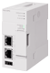

Network/Communication module OPC UA

OPC UA
OPC UA is a platform-independent communications standard developed by the OPC foundation, USA.
It enables data exchange between vendor and OS neutral products, and offers secure and reliable data communications between manufacturing levels and higher-level IT systems.
OPC UA is architecture for information exchange between an application and a device.
In a format corresponding to FX5-OPC, information is exchanged between OPC UA client (an external application or device) and OPC UA server (FX5-OPC).
Information to be exchanged is composed of objects and references as a set. The dedicated protocol constructed in TCP/IP network layers is used for information exchange.
OPC UA communication is suitable for use in all networks including the Internet due to robust end-to-end security.

OPC UA
| Model | OPC UA version |
OPC UA server profile |
Connection method | Compatible CPU module | ||||
|---|---|---|---|---|---|---|---|---|
| FX5U | FX5UC | FX5UJ | FX5S | |||||
|  | FX5-OPC OPC UA module |
1.03 | Micro Embedded Device Server Profile |
Ethernet | *1 ○ Up to 1 module |
*1 *2 ○ Up to 1 module |
× | × |
- *1Supported in version 1.245 or later.
- *2When connecting to FX5UC, FX5-CNV-IFC or FX5-C1PS-5V is required.
OPC UA and OPC CERTIFIED logos are registered trademarks of OPC Foundation.
This product includes software developed by the OpenSSL Project for use in the OpenSSL Toolkit.
(http://www.openssl.org/)
This product includes software derived from the RSA Data Security, Inc. MD5 Message-Digest Algorithm.